Introduction
At Rotko Networks, our commitment to powering the development and deployment of decentralized applications within the Web3 ecosystem is unwavering. In achieving this, we are dedicated to providing an infrastructure that encapsulates robust hardware, optimized to deliver top-tier performance while ensuring minimal memory latency.
Our approach to building this infrastructure transcends the conventional focus on computational capabilities. We place a similar, if not greater, emphasis on storage solutions, integrating high-speed data access systems that boast minimal latency. Furthermore, we integrate technology that guarantees data integrity, adding another layer of trust to our operations.
Our server's network robustness is another aspect we can't overemphasize. It's equipped with cutting-edge features that ensure seamless, swift, and efficient data transfer. This is a key facet of our system, as it contributes significantly to a smooth, unbroken service for end users.
Recognizing the heavy-duty nature of blockchain operations, we've carefully selected components for our server that not only meet the demand for resource-intensive applications but also have the capacity to exceed these requirements.
In the following sections, we'll delve into the specifics of the hardware that forms the backbone of our infrastructure, discussing their features, capabilities, and the reasons they've been chosen for our server operations.
Join us as we take a detailed look at our server infrastructure, designed and engineered to promote growth and foster innovation in the Web3 ecosystem. Prepare for an insightful journey into the hardware specifics that power Rotko Networks. Stay tuned!
Hardware
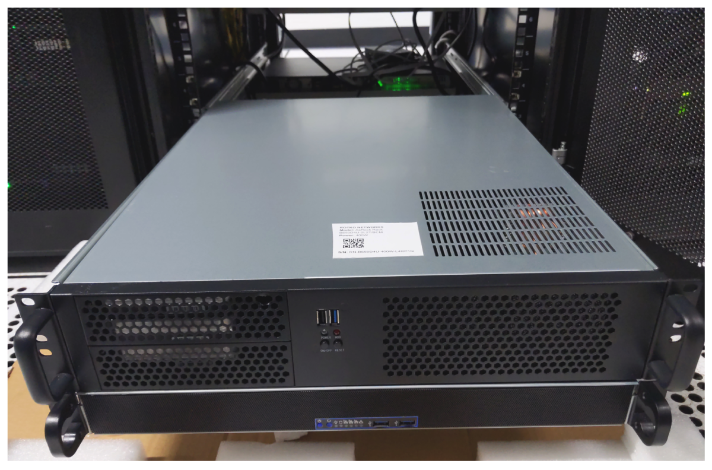
Our primary goal is to deliver a high-performance and secure blockchain infrastructure that fosters trust and reliability. We aim to achieve this by focusing on the critical elements of blockchain technology - namely, ensuring high single-thread performance for validator services, and low latency for RPC services, among others.
Validator services in blockchain infrastructures demand high single-thread performance due to the nature of their operations. Validators, in essence, validate transactions and blocks within the blockchain. They act as the arbitrators of the system, ensuring the veracity and accuracy of the information being added to the blockchain. This is an intensive process that involves complex computations and encryption, thus requiring a high-performance, single-thread system to maintain efficiency.
The low latency required for our RPC services is another vital factor in our hardware design. RPC, or Remote Procedure Call, is a protocol that allows a computer program to execute a procedure in another address space, usually on another network, without the programmer needing to explicitly code for this functionality. In simpler terms, it's a way for systems to talk to each other. Low latency in these operations is crucial to ensure a smooth and seamless dialogue between various systems within the blockchain. A delay or a lag in these communications can cause bottlenecks, leading to a slowdown in overall operations.
The hardware components and their configurations we have selected are specifically designed to address these needs. By leveraging advanced technologies like the AMD Ryzen 9 7950X for its superior single-thread performance, DDR5 memory for fast data retrieval, and NVMe SSDs for their exceptional speed in data storage and retrieval, we aim to provide an infrastructure that can effectively handle the demands of blockchain technology.
Our infrastructure is also designed to ensure scalability and flexibility. As the demands of the blockchain ecosystem grow, so too should our capacity to handle these increasing demands. Hence, our hardware design also incorporates elements that will allow us to easily scale up our operations when necessary.
In essence, our hardware is purpose-built to deliver high-performance blockchain operations that are secure, reliable, and capable of scaling with the demands of the evolving blockchain ecosystem.
Rack
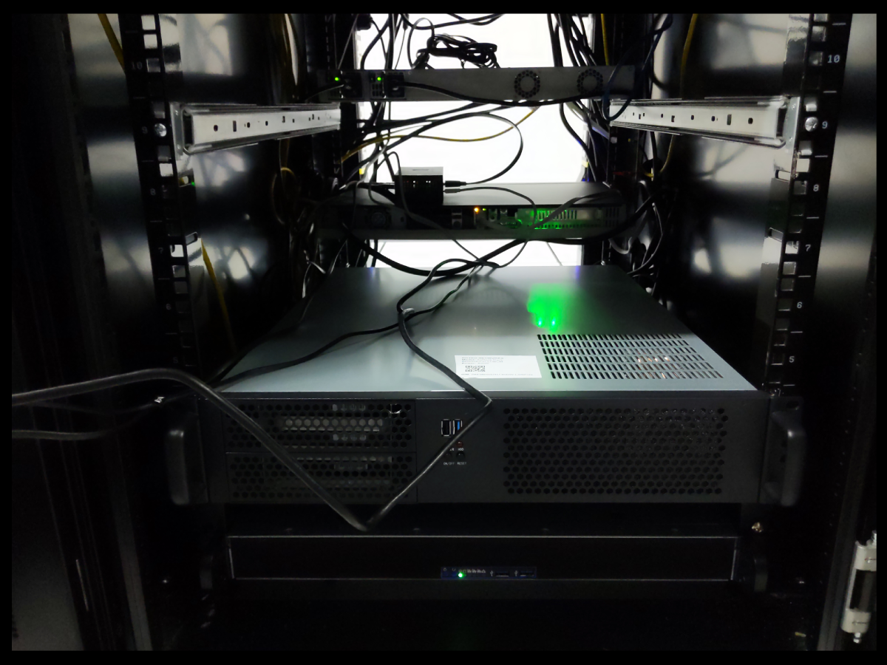
At the heart of our operations is a meticulously designed server infrastructure, securely housed within ten units of a top-tier 42U rack. Providing approximately 230 liters of computational capacity, our setup is powered by a robust dual 2kW, 220V power system that underlines our commitment to delivering superior performance and steadfast availability.
Our server infrastructure is hosted within a carrier-neutral facility, strategically enabling seamless and robust connections with a broad range of service providers, ISPs, and cloud platforms. This network versatility fosters enhanced performance and unyielding reliability, thus ensuring a consistently superior user experience.
More than a mere assembly of servers, our setup is a comprehensively designed ecosystem meticulously architected to achieve maximum efficiency. Leveraging location flexibility, our infrastructure can be configured across multiple strategic points to guarantee optimal network connectivity and minimized latency.
Direct peering arrangements with major local and international internet exchanges ensure broad bandwidth and unwavering connectivity. Coupled with floor and inter-floor cross-connect cabling, we have fostered a well-connected network capable of facilitating smooth data transfer between servers and racks.
Our infrastructure is further enhanced with a suite of cutting-edge networking devices, including industry-leading routers and switches. Services such as KVM over IP for remote server management, alongside on-site technical support and smart hands as a service, amplify our operational efficiency.
To guarantee optimal performance and longevity of our hardware, a tightly regulated environment is maintained. Our facility features controlled air temperature and humidity, ensuring the hardware operates within optimal conditions. Additionally, we have installed a UPS and backup power generators to mitigate the risk of power interruptions.
Security is paramount. Our facility, with ISO 27001 certification, employs a rigorous system of access control with logging and video surveillance, ensuring a safe and secure environment for our infrastructure. Additional safety measures such as fire alarms and smoke protection systems are in place to protect our hardware. A dedicated network operations center, operational 24/7, stands ready to promptly address any technical concerns.
Our setup also incorporates a raised floor design, an element that demonstrates our meticulous attention to detail. This design improves air distribution and cable management, leading to thermal efficiency and a well-organized operational environment.
Links
BKK01 - Validator
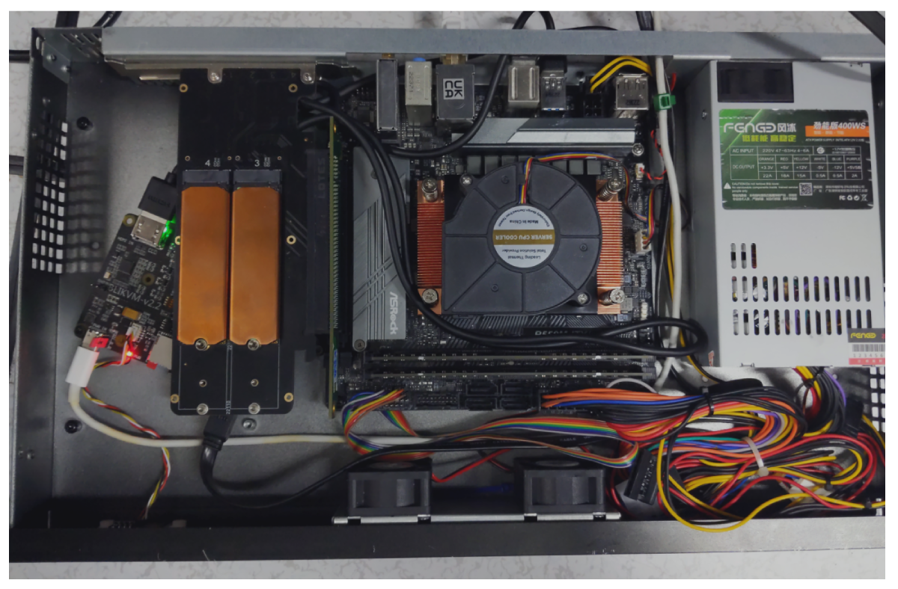
CPU
AMD RYZEN 5 5600G 6-Core 3.7 GHz (4.6 GHz Max Boost) Socket AM4 65W
The heart of our operations, the 6-core AMD RYZEN 5 5600G, offers excellent performance for blockchain applications. It provides robust and reliable service even under demanding workloads.
CPU Cooler
For managing the thermal performance of our CPU, we use the COOLSERVER P32 CPU Cooler. It's equipped with high-quality heatpipes and can handle the Ryzen 5 5600G even under intensive workloads.
RAM
Our setup uses 2 modules of 32GB DDR4 RAM from Hynix, providing us with ample bandwidth and ensuring smooth server operations.
Motherboard
The MSI A550M-ITX/ac motherboard is an engineering marvel that brings together the performance of the consumer world with the dependability of server-grade hardware. This motherboard supports the AMD Ryzen series CPUs and DDR4 memory, promising speed, reliability, and scalability.
Storage
4x 2TB NVME Monster Storage 3D TLC SSD - R:7400Mb/s W:6,600MB/s
For storage, we use 4 Monster Storage 3D TLC NVMe SSDs, each of 2TB capacity. These high-speed SSDs are known for their exceptional performance and efficiency in data storage and retrieval.
Power unit
This second-hand case comes with an integrated 400W Power Supply Unit. The PSU is essential for providing power to your internal components. It converts the power from the wall outlet into a usable form for your computer's components. Despite being second-hand, the PSU is in good condition and will provide a reliable power source for your system.
Chassis
This second-hand case comes with an integrated 400W Power Supply Unit. The PSU is essential for providing power to your internal components. It converts the power from the wall outlet into a usable form for your computer's components. Despite being second-hand, the PSU is in good condition and will provide a reliable power source for your system.
KVM
BliKVM v1 CM4 "KVM over IP" Raspberry Pi CM4 HDMI CSI PiKVM v3
A modern, highly secure, and programmable KVM solution running on Arch Linux, which provides exceptional control over your server, akin to physical access. With an easy build process, it boasts minimal video latency (about 100 ms) and a lightweight Web UI accessible from any browser. It emulates mass storage drives and allows ATX power management, secure data transmission with SSL, and local Raspberry Pi health monitoring. You can also manage GPIO and USB relays via its web interface. The PiKVM OS is production-ready, supports a read-only filesystem to prevent memory card damage, offers extensible authorization methods, and enables automation with macros.
Features of PiKVM:
- Fully-featured and modern IP-KVM: PiKVM is up-to-date with the latest KVM technologies.
- Easy to build: PiKVM offers ready-to-use OS images and a friendly build environment.
- Low video latency: With approximately 100 milliseconds of video latency, it provides one of the smallest delays of all existing solutions.
- Lightweight Web UI and VNC: The user interface is accessible through any browser, with no proprietary clients required. VNC is also supported.
- Mass Storage Drive Emulation: On Raspberry Pi 4 and ZeroW, PiKVM can emulate a virtual CD-ROM or Flash Drive. A live image can be uploaded to boot the attached server.
- ATX power management: PiKVM supports simple circuits for controlling the power button of the attached server.
- Security: PiKVM is designed with strong security, using SSL to protect traffic.
- Local monitoring: PiKVM monitors the health of the Raspberry Pi board and provides warnings for potential issues.
- GPIO management: Control GPIO and USB relays via the web interface.
- Production-ready: PiKVM OS is based on Arch Linux ARM and can be customized for any needs.
- Read-only filesystem: The OS runs in read-only mode to prevent damage to the memory card due to a sudden power outage.
- Extensible authorization methods: PiKVM supports integration into existing authentication infrastructure.
- Macro scripts: Repetitive actions can be automated with keyboard & mouse action macros.
- Open & free: PiKVM is open-source software, released under the GPLv3.
BKK02 - Validator 2
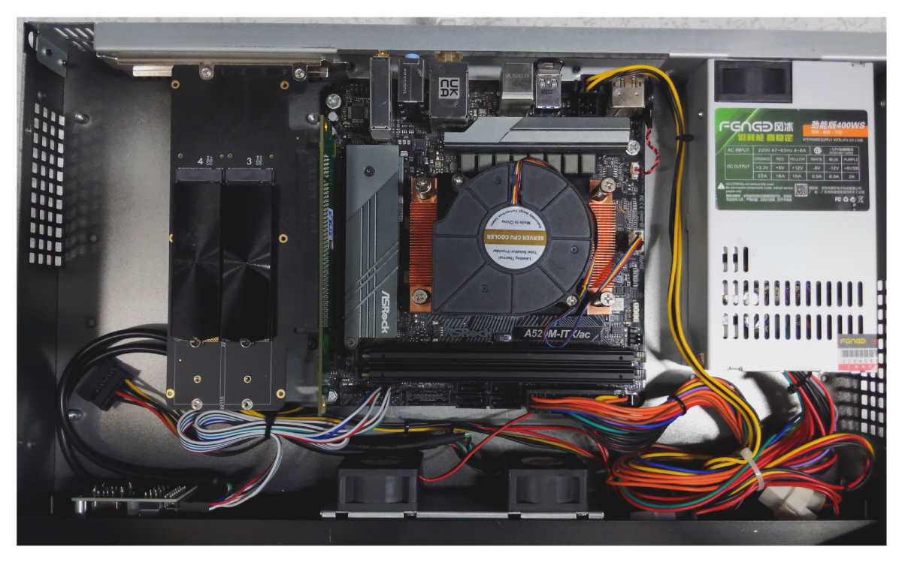
CPU
AMD RYZEN 5 5600G 6-Core 3.7 GHz (4.6 GHz Max Boost) Socket AM4 65W
The heart of our operations, the 6-core AMD RYZEN 5 5600G, offers excellent performance for blockchain applications. It provides robust and reliable service even under demanding workloads.
CPU Cooler
For managing the thermal performance of our CPU, we use the COOLSERVER P32 CPU Cooler. It's equipped with high-quality heatpipes and can handle the Ryzen 5 5600G even under intensive workloads.
RAM
Our setup uses 2 modules of 32GB DDR4 RAM from Hynix, providing us with ample bandwidth and ensuring smooth server operations.
Motherboard
The MSI A520M-ITX/ac motherboard is an engineering marvel that brings together the performance of the consumer world with the dependability of server-grade hardware. This motherboard supports the AMD Ryzen series CPUs and DDR4 memory, promising speed, reliability, and scalability.
Storage
4x 2TB NVME Monster Storage 3D TLC SSD - R:7400Mb/s W:6,600MB/s
For storage, we use 4 Monster Storage 3D TLC NVMe SSDs, each of 2TB capacity. These high-speed SSDs are known for their exceptional performance and efficiency in data storage and retrieval. Downside is that lacks DRAM for caching.
Power unit
This second-hand case comes with an integrated 400W Power Supply Unit. The PSU is essential for providing power to your internal components. It converts the power from the wall outlet into a usable form for your computer's components. Despite being second-hand, the PSU is in good condition and will provide a reliable power source for your system.
Chassis
This second-hand case comes with an integrated 400W Power Supply Unit. The PSU is essential for providing power to your internal components. It converts the power from the wall outlet into a usable form for your computer's components. Despite being second-hand, the PSU is in good condition and will provide a reliable power source for your system.
KVM
BliKVM v1 CM4 "KVM over IP" Raspberry Pi CM4 HDMI CSI PiKVM v3
A modern, highly secure, and programmable KVM solution running on Arch Linux, which provides exceptional control over your server, akin to physical access. With an easy build process, it boasts minimal video latency (about 100 ms) and a lightweight Web UI accessible from any browser. It emulates mass storage drives and allows ATX power management, secure data transmission with SSL, and local Raspberry Pi health monitoring. You can also manage GPIO and USB relays via its web interface. The PiKVM OS is production-ready, supports a read-only filesystem to prevent memory card damage, offers extensible authorization methods, and enables automation with macros.
Features of PiKVM:
- Fully-featured and modern IP-KVM: PiKVM is up-to-date with the latest KVM technologies.
- Easy to build: PiKVM offers ready-to-use OS images and a friendly build environment.
- Low video latency: With approximately 100 milliseconds of video latency, it provides one of the smallest delays of all existing solutions.
- Lightweight Web UI and VNC: The user interface is accessible through any browser, with no proprietary clients required. VNC is also supported.
- Mass Storage Drive Emulation: On Raspberry Pi 4 and ZeroW, PiKVM can emulate a virtual CD-ROM or Flash Drive. A live image can be uploaded to boot the attached server.
- ATX power management: PiKVM supports simple circuits for controlling the power button of the attached server.
- Security: PiKVM is designed with strong security, using SSL to protect traffic.
- Local monitoring: PiKVM monitors the health of the Raspberry Pi board and provides warnings for potential issues.
- GPIO management: Control GPIO and USB relays via the web interface.
- Production-ready: PiKVM OS is based on Arch Linux ARM and can be customized for any needs.
- Read-only filesystem: The OS runs in read-only mode to prevent damage to the memory card due to a sudden power outage.
- Extensible authorization methods: PiKVM supports integration into existing authentication infrastructure.
- Macro scripts: Repetitive actions can be automated with keyboard & mouse action macros.
- Open & free: PiKVM is open-source software, released under the GPLv3.
BKK03 - Bootnode/RPC
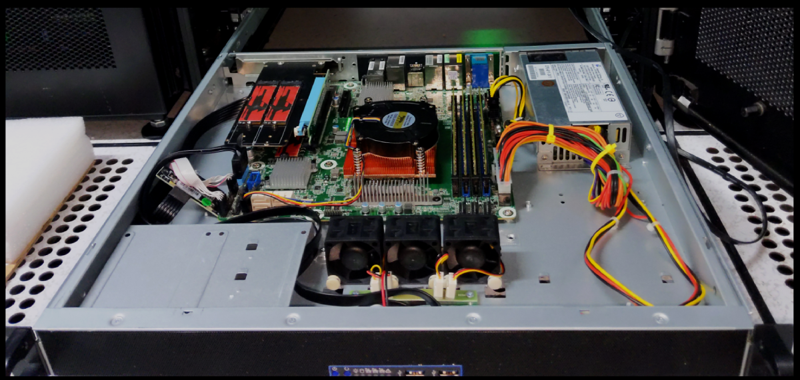
CPU: AMD Ryzen™ 9 7950X3D 16-Core 32-Thread 5NM
Product Link
The AMD Ryzen 9 7950X3D, with its 16-core 32-thread architecture, is the driving force behind our server's high performance. The CPU's multi-core design and high clock speeds are specifically optimized for blockchain applications, ensuring efficient chain synchronization and reliable endpoint service.
Featuring advanced technologies like PCI Express® 5.0 and DDR5, the CPU provides rapid data transfer, essential for low-latency blockchain transactions. The large 128MB L3 cache further bolsters performance by facilitating quick access to frequently used data, enhancing efficiency.
CPU Cooling System
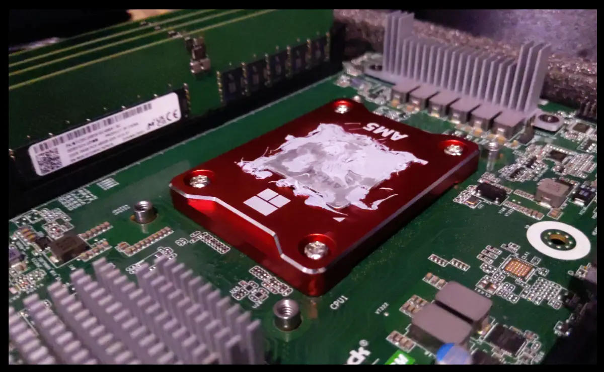
COOLSERVER P32 CPU Cooler
Thermalright aluminium alloy AM5 frame
Cooling efficiency is paramount in maintaining stable performance. Our server utilizes the COOLSERVER P32 AM5 Server CPU Cooler, in conjunction with the Thermalright AM5 frame, to maximize cooling capabilities.
Motherboard: AsRock Rack B650D4U-2L2T/BCM(LGA 1718) Dual 10G LAN
Product Link
This Micro-ATX motherboard stands as a testament to AsRock's engineering prowess, blending high-performance consumer technology with the robustness of server-grade hardware. The board offers full PCIe 5.0 support and features up to 7 M.2 slots for NVMe storage, enhancing data transfer speeds. Its compatibility with DDR5 ECC UDIMM memory further underlines its suitability for demanding server applications.
Memory: 4x 32GB MICRON DDR5 UDIMM/ECC 4800MHz
Product Link
Our selection of server-grade DDR5 memory modules provides substantial bandwidth for smooth server operations. Equipped with ECC technology, these modules maintain data integrity, ensuring the reliability of our transactions.
SSD Expansion: NVMe PCIe RAID Adapter 4 Ports NVME SSD to PCI-E 4.0 X16
This expansion card plays a vital role in our data management strategy by enabling the integration of top-tier NVMe SSDs. It contributes to our server's responsiveness by facilitating faster access to stored data.
Storage: 5x 2TB Hanye ME70 NVMe PCI-E4.0 7200mb/s
Product Link
Our system's storage is equipped with 2TB High-Performance ME70 M.2 NVMe SSDs, providing 12TB of high-speed storage. The SSDs' Gen4 PCIe tech and LDPC error correction ensure quick data access and integrity.
Benchmarks
2023-07-31 13:55:08 Running machine benchmarks...
2023-07-31 13:55:34
+----------+----------------+-------------+-------------+-------------------+
| Category | Function | Score | Minimum | Result |
+===========================================================================+
| CPU | BLAKE2-256 | 1.56 GiBs | 783.27 MiBs | ✅ Pass (203.8 %) |
|----------+----------------+-------------+-------------+-------------------|
| CPU | SR25519-Verify | 788.10 KiBs | 560.67 KiBs | ✅ Pass (140.6 %) |
|----------+----------------+-------------+-------------+-------------------|
| Memory | Copy | 27.73 GiBs | 11.49 GiBs | ✅ Pass (241.3 %) |
|----------+----------------+-------------+-------------+-------------------|
| Disk | Seq Write | 2.99 GiBs | 950.00 MiBs | ✅ Pass (322.0 %) |
|----------+----------------+-------------+-------------+-------------------|
| Disk | Rnd Write | 1.29 GiBs | 420.00 MiBs | ✅ Pass (313.4 %) |
+----------+----------------+-------------+-------------+-------------------+
From 5 benchmarks in total, 5 passed and 0 failed (10% fault tolerance).
2023-07-31 13:55:34 The hardware meets the requirements
Read Latency Statistics in nanoseconds:
-------------------------
Minimum: 520 ns
Maximum: 22540 ns
Mean: 914.595734 ns
Standard Deviation: 222.087316 ns
Read IOPS: 953140.861971
Chassis: 1U Case, TGC H1-400
Product Link
Power Supply Unit: 400W Compuware 80 PLUS Platinum PSU
Vendor Link
KVM: Asrock Rack BCM/IPMI
The AsRock Rack motherboard includes a BCM for remote control, offering robust management capabilities.
BKK04 - Bootnode/RPC
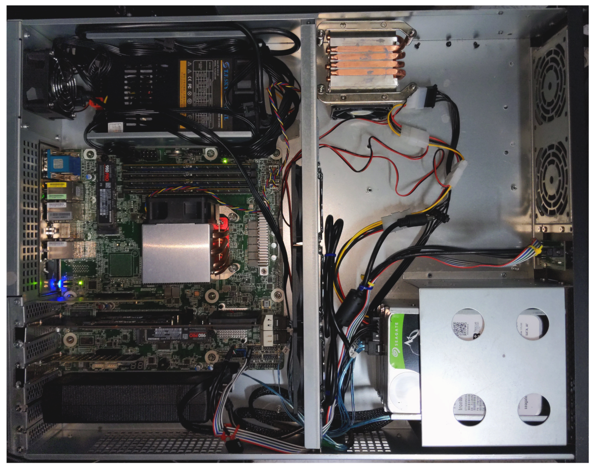
CPU
Model: AMD Ryzen 9 7950X R9 7950X CPU Processor 16-Core 32-Thread 5NM L3=64M Socket AM5
- Core Count: 16 cores
- Technology: 5NM process
- L3 Cache: 64MB
- PCI Express: 5.0
- Memory Support: DDR5
Capabilities: Designed to manage multiple tasks with ease, such as running multiple networks simultaneously, efficient blockchain sync, and low latency transactions.
CPU Cooler
- Model: COOLSERVER R64 AM5 Server CPU Cooler
- Design: 4 high-quality heatpipes, 150W TDP, double ball bearing
- Enhancement: Thermalright aluminium alloy AM5 frame
Motherboard
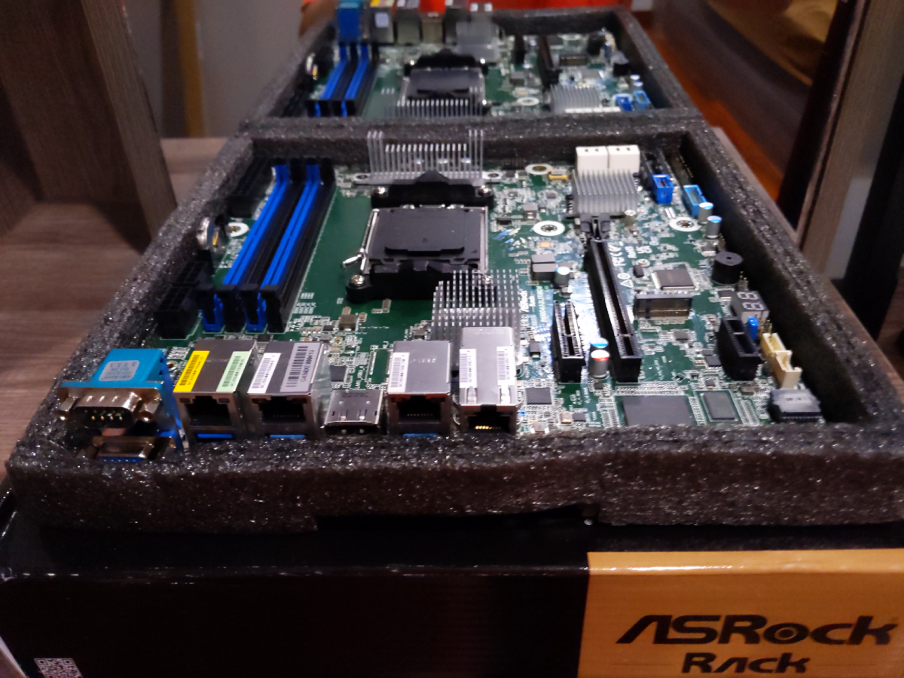 Model: AsRock Rack B650D4U(LGA 1718)
- Form Factor: Micro-ATX
- Memory Support: DDR5 ECC UDIMM
- PCIe Slots: Full PCIe 5.0 support, M.2 slot, x16 slot, and x4 slot
- Storage Support: Up to 7 M.2 slots
Memory
Model: 4x Server Memory Module|MICRON|DDR5|32GB|UDIMM/ECC|4800MHz|CL 40|1.1V|MTC20C2085S1EC48BA1R
- Capacity: 4 modules of 32GB DDR5 each
- Technology: ECC for increased data integrity
- Performance: Low-latency
SSD Expansion Cards
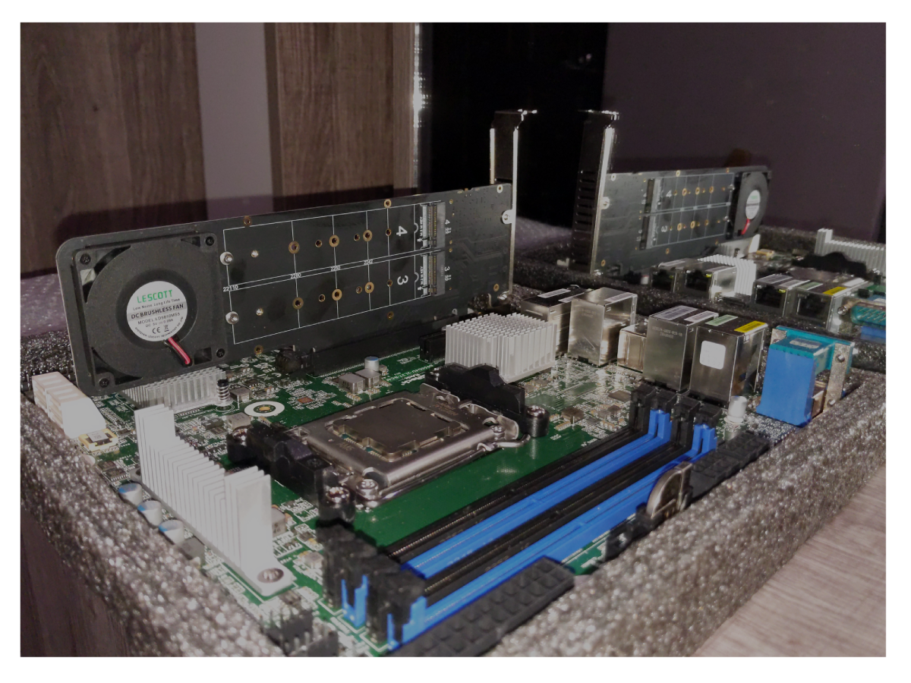
- Model: NVMe SSD Expansion Card NVMe PCIe RAID Adapter 4 Ports NVME SSD To PCI-E 4.0 X16 Expansion Card
Storage
- Primary Storage: 6x 2TB Samsung SSD Pro 980
- Backup Storage: 3x 16TB disks in ZFS RAIDZ (32TB total)
Benchmarks
``+----------+----------------+-------------+-------------+-------------------+
| Category | Function | Score | Minimum | Result |
+===========================================================================+
| CPU | BLAKE2-256 | 1.65 GiBs | 783.27 MiBs | ✅ Pass (215.8 %) |
|----------+----------------+-------------+-------------+-------------------|
| CPU | SR25519-Verify | 832.82 KiBs | 560.67 KiBs | ✅ Pass (148.5 %) |
|----------+----------------+-------------+-------------+-------------------|
| Memory | Copy | 16.99 GiBs | 11.49 GiBs | ✅ Pass (147.9 %) |
|----------+----------------+-------------+-------------+-------------------|
| Disk | Seq Write | 2.09 GiBs | 950.00 MiBs | ✅ Pass (225.3 %) |
|----------+----------------+-------------+-------------+-------------------|
| Disk | Rnd Write | 885.35 MiBs | 420.00 MiBs | ✅ Pass (210.8 %) |
+----------+----------------+-------------+-------------+-------------------+
From 5 benchmarks in total, 5 passed and 0 failed (10% fault tolerance).
2023-08-03 00:49:00 The hardware meets the requirements
Read Latency Statistics in nanoseconds:
-------------------------
Minimum: 460 ns
Maximum: 535014 ns
Mean: 968.885148 ns
Standard Deviation: 280.737214 ns
99.99th Percentile Read Latency: 350 ns
-------------------------
Read IOPS: 906996.500117
The read latency meets the 2000 ns and lower QoS requirement
Chassis
- Model: TGC-24550 2U
- Design: 2U rackmount, efficient airflow design
Power Supply Unit
- Model: T.F.SKYWINDINTL 1U MINI Flex ATX Power Supply Unit 400W Modular PSU
- Capacity: 400W
- Features: Built-in cooling fan, overcurrent, overvoltage, and short-circuit protection
KVM
- Model: Asrock Rack BCM/IPMI for remote control
Summary
The BKK04 Bootnode leverages a combination of cutting-edge components to deliver high performance, reliability, and scalability. From the AMD Ryzen 9 7950X processor with 32 threads high core clock cycles to the efficient memory and robust storage solutions, every part of this server is designed to handle demanding server applications, particularly those related to blockchain processing. The use of advanced cooling and power supply units ensures long-term sustainability and stable operation. All components have been chosen as well to be most energy efficient solutions that market can currently provide.
Energy Consumption and Carbon Offset
Energy Consumption
We meticulously engineer our server infrastructure, selecting the most energy-efficient devices the market can provide for the amount of computation required. Our approach is proven by the actual consumption rate, which is lower than the manufacturer's estimates.
-
Processor Selection:
- 2x AMD Ryzen 5600G: 65W each
- 1x AMD Ryzen 5950X: 170W
- 1x AMD Ryzen 5950X3D: 120W
- MikroTik CCR2004-16G-2S+: Max 35W
-
Monthly Energy Consumption Estimate:
- Total Power: 2 * 65W (5600G) + 170W (5950X) + 120W (5950X3D) + 35W (router) = 455W
- Monthly: 0.455 kW * 24 hours/day * 30 days/month = 327.6 kWh
- CO2e Emissions (Thailand's 2021 average): 170.32 kg or 0.17 metric tons (mt)
Our selection of processors and devices, including the MikroTik CCR2004-16G-2S+, ensures an optimal performance-to-power ratio. This innovative approach to energy consumption highlights our dedication to sustainability and our commitment to leading the way in energy-efficient computing.
Carbon Offset
To mitigate our environmental impact, we're offsetting our carbon emissions through a monthly subscription with TerraPass, purchasing Renewable Energy Certificates (RECs) for clean energy projects. These offsets, including Landfill Gas Capture and Wind Farms, are under reputable standards like the Climate Action Reserve (CAR).
Moving Forward
We're committed to transparent and accountable climate action, continuously striving to reduce our environmental impact and informing stakeholders of our efforts. Our goal transcends merely offsetting emissions; we're building a resilient, sustainable organization contributing positively to our planet.
Carbon Offset Plan

Achieving sustainability requires active offsetting. We've partnered with TerraPass, choosing their 1 MWh/month RECs subscription for £12.00 per MWh, exceeding our estimated emissions of 0.166 mt of CO2e. This 'over-offsetting' strategy supports renewable energy projects, reflecting our dedication to environmental change.
In conclusion, our approach to energy consumption and carbon offsetting aligns with our commitment to environmental responsibility and innovation. By actively engaging in sustainable practices, we contribute not only to offsetting our carbon emissions but to the broader goal of a cleaner, greener future.
Software Infrastructure
Our infrastructure leverages several powerful technologies and platforms to provide a robust and efficient environment for our operations.
Debian
Our servers run on Debian, a highly stable and reliable Linux-based operating system. Debian provides a strong foundation for our operations, with its wide array of packages, excellent package management system, and strong community support. Its stability and robustness make it an excellent choice for our server environments.
Proxmox Virtual Environment
We utilize Proxmox, an open-source server virtualization management solution. Proxmox allows us to manage virtual machines, containers, storage, virtualized networks, and HA clustering from a single, integrated platform. This is crucial in ensuring we have maximum control and efficiency in managing our various server processes. We utilize linux 6.1 lts pve kernel.
LXC (Linux Containers)
We leverage LXC (Linux Containers) to run multiple isolated Linux systems (containers) on a single host. This containerization technology provides us with lightweight, secure, and performant alternatives to full machine virtualization.
ZFS
ZFS, the Zettabyte File System, is an advanced filesystem and logical volume manager. It was designed to overcome many of the major issues found in previous designs and is used for storing data in our Proxmox environment. It provides robust data protection, supporting high storage capacities and efficient data compression, and allows us to create snapshots and clones of our filesystem.
Ansible
We use Ansible for automation of our system configuration and management tasks. Ansible enables us to define and deploy consistent configurations across multiple servers, and automate routine maintenance tasks, thus increasing efficiency and reducing the risk of errors.
MikroTik RouterOS
Our network infrastructure relies on MikroTik RouterOS, a robust network operating system. This system offers a variety of features such as routing, firewall, bandwidth management, wireless access point, backhaul link, hotspot gateway, VPN server, and more. This helps us ensure secure, efficient, and reliable network operations.
All these technologies are intertwined, working together to support our operations. They are chosen not just for their individual capabilities, but also for their compatibility and interoperability, creating an integrated, efficient, and reliable software infrastructure.
Firmware Updates
Samsung 980Pro NVMe
wget https://semiconductor.samsung.com/resources/software-resources/Samsung_SSD_980_PRO_5B2QGXA7.iso
apt-get -y install gzip unzip wget cpio
mkdir /mnt/iso
sudo mount -o loop ./Samsung_SSD_980_PRO_5B2QGXA7.iso /mnt/iso/
mkdir /tmp/fwupdate
cd /tmp/fwupdate
gzip -dc /mnt/iso/initrd | cpio -idv --no-absolute-filenames
cd root/fumagician/
sudo ./fumagician
This .iso is for 980 Pro, if you have different model replace ISO with link on https://semiconductor.samsung.com/consumer-storage/support/tools/
ASRock Rack Motherboard
This guide outlines the steps to update the firmware on your ASRock Rack motherboard. The update includes the BIOS, BMC (Baseboard Management Controller), and the networking firmware.
Before starting, download the following files:
BIOS Update
ASRock Rack provides a BIOS flash utility called ASRock Rack Instant Flash, embedded in the Flash ROM, to make the BIOS update process simple and straightforward.
-
Preparation: Format a USB flash drive with FAT32/16/12 file system and save the new BIOS file to your USB flash drive.
-
Access ASRock Rack Instant Flash: Restart the server and press the
<F6>key during the POST or the<F2>key to enter the BIOS setup menu. From there, access the ASRock Rack Instant Flash utility. -
Update BIOS: Follow the instructions provided by the utility to update the BIOS.
BMC Firmware Update
In order to keep your BMC firmware up-to-date and have the latest features and improvements, regular updates are recommended. This guide provides step-by-step instructions on how to update your BMC firmware.
-
Preparation: Download the correct BMC firmware update file from the ASRock Rack website. Ensure the firmware version is later than the one currently installed on your device. Save the firmware file on your local system.
-
Access BMC Maintenance Portal: Open your web browser and navigate to the BMC maintenance portal using the IP address of the BMC. Typically, the URL is https://[BMC IP Address]/#maintenance/firmware_update_wizard, for instance, https://192.168.33.114/#maintenance/firmware_update_wizard.
-
Login: Use your BMC username and password to log into the portal.
-
Firmware Update Section: Navigate to the firmware update section.
-
Upload Firmware Image: Click on "Select Firmware Image" and upload the firmware file you downloaded earlier. The firmware files typically end with
.ima. For instance,B650D4U_2L2T_4.01.00.ima. -
Preserve Configuration: If you want to preserve all the current configurations during the update, check the box "Preserve all Configuration". This will maintain all the settings irrespective of the individual items marked as preserve/overwrite in the table below.
-
Start Update: Click "Firmware Update". The system will validate the image and if successful, the update process will start. The progress will be shown on the screen.
-
Reboot: Once the update is completed, the system will reboot automatically.
WARNING: Please note that after entering the update mode, other web pages, widgets, and services will not work. All the open widgets will be automatically closed. If the update is cancelled in the middle of the process, the device will be reset only for BMC BOOT, and APP components of Firmware.
NOTE: The IP address used in this guide is an example. Replace it with the actual IP address of your BMC. Also, remember to use a reliable network connection during the update process to prevent any interruption.
Networking Firmware Update
-
Preparation: Format a USB flash drive and copy the "bnxtmt-lite-uefi-221.0.117.0-x64" folder from the downloaded Broadcom 57416 LAN Flashing Firmware onto it.
-
Access UEFI Shell: Insert the USB flash drive into your ASRock Rack server board, reboot the server, and hit F11 at the POST screen. Select "UEFI: Built-in EFI Shell". The USB flash drive should be named
FS0:. TypeFS0:and press enter.
-
Verify Current Firmware Version: Execute
bnxtmt.efito display the current firmware version.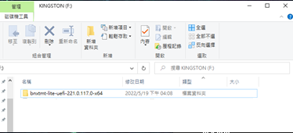
-
Erase the Flash: Navigate to the "bnxtmt-lite-uefi-221.0.117.0-x64" folder and execute
bnxtmt.efi -sysop -none -no_swap –blankto erase the current firmware.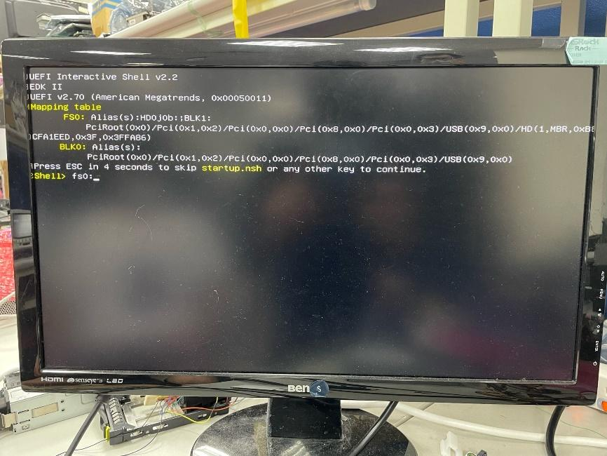
-
Flash the Firmware: Execute
bnxtmt.efi -sysop -none -no_swap -fnvm ASRR57416-2T.PKG -log FW1.logto flash the new firmware. Here,ASRR57416-2T.PKGis the firmware file.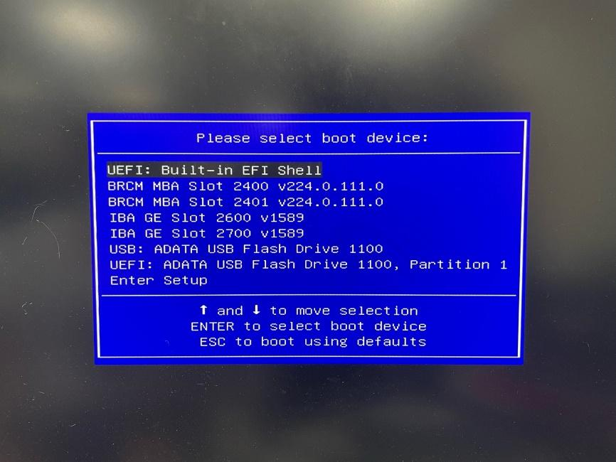
-
Verify Updated Firmware Version: Run
bnxtmt.efiagain to verify the new firmware version.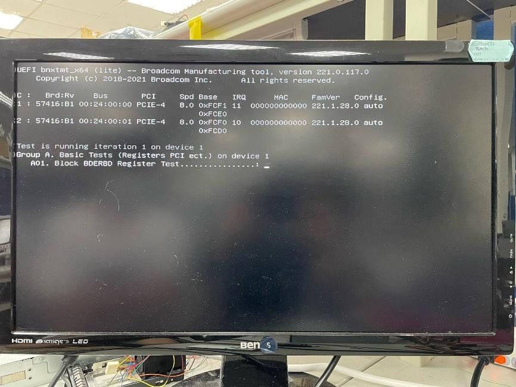
-
Flash LAN Ports' MAC Addresses: Execute
bnxtmt.efi -none –m -log MAC1.log.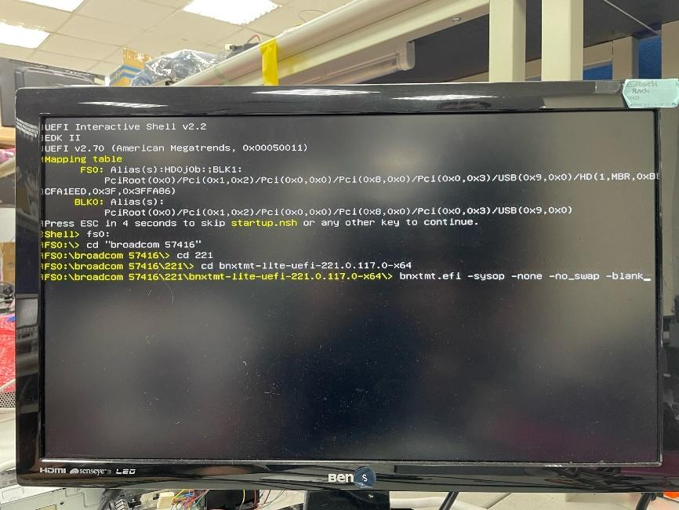
-
Input MAC Addresses: Enter the MAC addresses of both LAN ports when prompted. Write down these addresses beforehand.
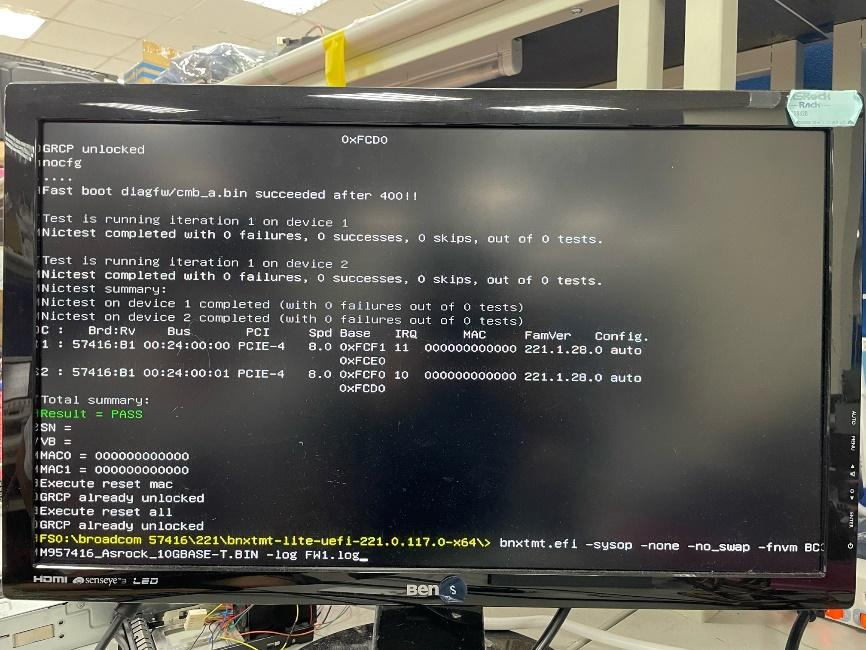
-
Power Cycle: Turn off the system, power cycle the PSU, and then power everything back on.
Note: The MAC addresses for your LAN ports are crucial. Write them down before starting the update process as they need to be added during the command at step 8.
Networking
Bandwidth

We operate a dedicated bandwidth connection providing up to 200Mbps for international direct land-line and under-sea connections. This service extends all the way to Singapore, ensuring latency below 30ms. This speed is critical for RPC endpoint provider operations, where timely data transfer is a crucial success factor. The provision to scale up our bandwidth capabilities offers us the flexibility to match our growing needs without compromising on the quality of service.
Router

MikroTik Cloud Core Router CCR2004-16G-2S+
We use the MikroTik Cloud Core Router CCR2004-16G-2S+ for its optimal low latency networking and high throughput capabilities.
- Performance: The CCR2004 router uses the Annapurna Labs Alpine v2 CPU, which has 4x 64-bit ARMv8-A Cortex-A57 cores for robust single-core performance.
- Bandwidth: The router has 18 wired ports, including 16x Gigabit Ethernet ports and two 10G SFP+ cages for high data traffic management.
- No Bottlenecks: Each group of 8 Gigabit Ethernet ports is connected to a distinct Marvell Amethyst family switch-chip, each having a separate 10 Gbps full-duplex line to the CPU for full wire speed operation.
- Single-Core Performance per Watt: The CCR2004 router offers the best single-core performance per watt across all CCR devices.
- Reliability and Durability: The CCR2004 router, encased in a classic white 1U rackmount, incorporates built-in dual redundant power supplies for uninterrupted service.
IPv4 Configuration
Our subnet, based on the CIDR notation of 255.255.255.248 (/29), provides us with 6 usable IP addresses, from 27.131.160.105 to 27.131.160.110, out of a total of 8. The first address, 27.131.160.104, is the network address, and the last one, 27.131.160.111, is the broadcast address. They can't be used for hosts (like our router or nodes).
We currently use the following configuration:
- Network Address: 27.131.160.104
- Gateway (ISP's router): 27.131.160.105
- Our Router's WAN Interface: 27.131.160.106
- Usable addresses for nodes: 27.131.160.107 to 27.131.160.110
- Broadcast Address: 27.131.160.111
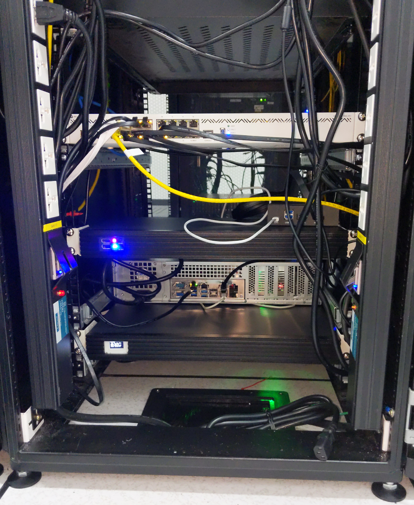
Proxmox Network Configuration Guide
Overview
Networking in Proxmox is managed through the Debian network interface
configuration file at /etc/network/interfaces. This guide will walk you
through the process of configuring the network interfaces and creating a Linux
bridge for your Proxmox server.
Pre-requisites:
Before we begin, you should have:
- A Proxmox VE installed and configured on your server.
- Administrative or root access to your Proxmox VE server.
Step 1: Understand Proxmox Network Configuration Files
Proxmox network settings are mainly configured in two files:
/etc/network/interfaces: This file describes the network interfaces available on your system and how to activate them. This file is critical for setting up bridged networking or configuring network interfaces manually./etc/hosts: This file contains IP address to hostname mappings.
Step 2: Configure Primary Network Interface
First, open the network interfaces configuration file for editing:
Set your primary network interface (e.g., enp9s0) to manual:
nano /etc/network/interfaces
auto enp9s0
iface enp9s0 inet manual
Step 3: Configure Linux Bridge
Next, create a Linux bridge (vmbr0):
auto vmbr0
iface vmbr0 inet static
address 192.168.69.103
netmask 255.255.255.0
gateway 192.168.69.1
bridge_ports enp9s0
bridge_stp off
bridge_fd 0
Make sure to replace the address, netmask, and gateway parameters with
the correct values for your network.
Step 4: Apply Configuration
Save and exit the file, then restart the network service for the changes to take effect:
systemctl restart networking.service
Step 5: Verify Configuration
Use the ip a command to verify that the bridge was created successfully:
ip a
Step 6: Configure the Hosts File
The /etc/hosts file maps network addresses to hostnames. Open this file in a
text editor:
nano /etc/hosts
Then, define the IP address and corresponding FQDN and hostname for your Proxmox server:
127.0.0.1 localhost
192.168.69.103 bkk03.yourdomain.com bkk03
# The following lines are desirable for IPv6 capable hosts
::1 localhost ip6-localhost ip6-loopback
ff02::1 ip6-allnodes
ff02::2 ip6-allrouters
Remember to replace 192.168.69.103, bkk03.yourdomain.com, and bkk03 with
your server's IP address, FQDN, and hostname, respectively.
After updating the /etc/hosts file, save and exit the editor.
Important: Ensure the FQDN in your /etc/hosts matches the actual FQDN of
your server. This FQDN should be resolvable from the server itself and any
machines that will be accessing it. The Proxmox web interface uses this
hostname to generate SSL certificates for the HTTPS interface, so incorrect
resolution may lead to certificate issues.
By carefully following the instructions provided in this guide, administrators can ensure a robust and secure networking setup for their Proxmox servers. This guide should provide a good starting point for both new and experienced Proxmox administrators to understand and manage the network settings of their servers effectively.
Troubleshooting
If you run into issues during this process, you can use the following commands to troubleshoot:
-
systemctl status networking.service: Displays the status of the networking service. -
journalctl -xeu networking.service: Provides detailed logs for the networking service. -
ip addr flush dev <interface>andip route flush dev <interface>: Clears IP addresses and routes on a given interface. -
ip link delete <bridge>andip link add name <bridge> type bridge: Deletes and recreates a bridge. -
ip link set <interface> master <bridge>: Assigns an interface to a bridge. -
ip addr add <ip>/<subnet> dev <bridge>: Assigns an IP address to a bridge.
Remember to replace <interface>, <bridge>, <ip>, and <subnet> with the
appropriate values for your network.
For more detailed information about Proxmox networking, refer to the official Proxmox documentation.
RouterOS
RouterOS is an operating system designed specifically for routers and network devices. Developed by the Latvian company MikroTik, it is used to turn standard x86-64 architecture computers or MikroTik's own RouterBOARD hardware into fully functional routers.
RouterOS provides all the core features expected in a router, such as routing, firewalling, bandwidth management, VPN support, and more. Here's a brief overview of some key features and aspects:
-
Routing: Supports various routing protocols such as BGP, OSPF, RIP, and MPLS, allowing for robust and scalable network design.
-
Firewall: RouterOS includes a powerful firewall to secure the network. It allows for filtering by IP address, port, protocol, and other parameters.
-
Quality of Service (QoS): Bandwidth management is a strong feature in RouterOS, enabling administrators to prioritize certain types of traffic, limit bandwidth for specific users, or guarantee certain bandwidth levels for specific services.
-
Virtual Private Network (VPN) Support: RouterOS supports various VPN protocols, including OpenVPN, L2TP, PPTP, and SSTP, allowing secure connections to remote networks.
-
Wireless Capabilities: It provides support for various wireless standards, making it suitable for creating Wi-Fi hotspots or linking locations wirelessly.
-
User Management: RouterOS offers multiple user levels and authentication methods, such as local database, RADIUS, and more.
-
Hotspot Gateway: It allows the setup of a custom user login page, authentication of users, and bandwidth limitation, particularly useful in public Wi-Fi scenarios like hotels, airports, etc.
-
Winbox: RouterOS can be managed through Winbox, a GUI application provided by MikroTik, as well as through command line and web interfaces. Winbox enables an easy-to-use interface for configuring and monitoring the router.
-
Scalability: Suitable for small home setups and also for large enterprise networks. It provides robust features that can be tailored to fit various network sizes and requirements.
-
Licensing: RouterOS licensing is tiered, with higher-level licenses unlocking additional features. This allows users to choose the level that fits their specific needs and budget.
-
Scripting: RouterOS includes a scripting language that lets administrators automate various functions and operations. Also SSL secured API available.
-
Updates and Security: Regular updates are provided by MikroTik, including security patches and feature enhancements.
RouterOS makes a compelling choice for network professionals who need an affordable and highly configurable operating system for their routers. It can transform simple hardware into powerful network devices with an extensive range of features. Whether deployed in small businesses, large enterprises, or ISPs, RouterOS is a versatile solution to many networking needs.
FastTracking
Efficient Routing and Firewall Management with MikroTik Routers
Efficiency in routing and firewall management is paramount in a network environment, especially when tasked with handling substantial traffic volumes. This document elucidates best practices for configuring MikroTik routers to realize optimal performance, concentrating on FastTrack technology and judicious firewall rule arrangement.
FastTrack Configuration
MikroTik routers offer FastTrack, a performance optimization feature that enables specific packets to bypass various handling layers. The benefit of this bypass is twofold: reduced CPU load and increased throughput.
The Advantage of FastTrack
FastTrack substantially lightens the burden on the router's CPU, thereby accommodating more connections and amplifying throughput. This efficiency is particularly invaluable for Peer-to-Peer (P2P) connections, such as those utilized by Polkadot nodes.
Implementing FastTrack
FastTrack can be implemented with precision to enhance the performance of Polkadot P2P ports.
-
Identify the Connections: Ascertain the connections you desire to FastTrack. Typically, for Polkadot nodes, the FastTrack would be applied to the P2P ports (e.g.,
30333) responsible for inter-node communication. -
Construct the FastTrack Rule: Position the FastTrack rule at the zenith of the firewall filter rules. The following example demonstrates a FastTrack rule for Polkadot P2P port
30333, targeting the IP address192.168.42.101:/ip firewall filter add chain=forward action=fasttrack-connection dst-address=192.168.42.101 protocol=tcp dst-port=30333 connection-state=established,related -
Formulate a Corresponding Accept Rule: FastTracking a connection does not automatically validate it, necessitating a corresponding 'accept' rule subsequent to the FastTrack rule:
/ip firewall filter add chain=forward action=accept dst-address=192.168.42.101 protocol=tcp dst-port=30333 connection-state=established,related -
Configure Port Forwarding: Accurate port forwarding is fundamental for channeling traffic to the Polkadot node. An example of a Destination NAT rule for directing traffic on port
30333to the internal address192.168.42.101is as follows:/ip firewall nat add chain=dstnat action=dst-nat to-addresses=192.168.42.101 to-ports=30333 protocol=tcp dst-address=27.131.160.106 dst-port=30333
Ordering Firewall Rules
The sequencing of firewall rules is pivotal, as rules are processed linearly. The advised general order is:
- Essential Drop Rules: Intercept known malicious IPs or undesired traffic.
- FastTrack Rules: As detailed above.
- General Allow and Deny Rules: These encompass standard protocols and services either to be permitted or obstructed.
Monitoring and Refinement
MikroTik offers diverse tools to observe your router's performance:
- Resource Monitoring: Utilize
/system resource printto inspect CPU and memory usage. - Connection Tracking: Examine FastTrack connections with
/ip firewall connection tracking print.
Consistent monitoring is instrumental in detecting performance restrictions and avenues for further enhancement.
Filesystem
The file system is perhaps the most underappreciated component in the blockchain synchronization process, despite being pivotal. It's puzzling how little attention this crucial element receives. Try seeking a single article discussing the ideal record sizes for blockchain databases - you'll quickly discover the dearth of literature on this subject. By offloading additional tasks to the application users, we inadvertently make chains more difficult to synchronize, an outcome that inadvertently centralizes those running the nodes.
Upon rigorous testing of various file systems - including mdraid (ext4), LVM, mdraid, Btrfs, and ZFS - our findings suggest that ZFS stands out as the most user-friendly and well-rounded solution. While LVM and Btrfs also has its merits, its user interface tooling design seems to be more suitable for those with a high tolerance for complexity.
ZFS
ZFS offers incredibly easy client tool to use for setting up complex filesystem setup with snapshots and quota management.
Installation
execute as sudo on debian12/bookworm
#!/bin/bash
# Create the backports file
echo "deb http://deb.debian.org/debian bookworm-backports main contrib
deb-src http://deb.debian.org/debian bookworm-backports main contrib" > /etc/apt/sources.list.d/bookworm-backports.list
# Create the preferences file
echo "Package: src:zfs-linux
Pin: release n=bookworm-backports
Pin-Priority: 990" > /etc/apt/preferences.d/90_zfs
# Update package lists
apt update
# Install necessary packages
apt install -y dpkg-dev linux-headers-$(uname -r) linux-image-$(uname -r)
# Set the environment variable DEBIAN_FRONTEND to noninteractive
# Install ZFS packages
DEBIAN_FRONTEND=noninteractive apt install -y zfs-dkms zfsutils-linux
# Verify the ZFS installation
modprobe zfs && echo "ZFS installed successfully" || echo "ZFS installation failed"
ZFS partitioning
#!/bin/bash
# bkk03 zfs setup
# Array of disks to be used
disks=("nvme1n1" "nvme2n1" "nvme3n1" "nvme4n1")
# Size of the swap partition on each disk
swap_size="16G"
# Create swap partition and ZFS partition on each disk
for disk in "${disks[@]}"; do
echo "Creating partitions on /dev/${disk}"
# Create the swap partition
parted -s /dev/${disk} mklabel gpt
parted -s /dev/${disk} mkpart primary linux-swap 1MiB ${swap_size}
mkswap /dev/${disk}p1
swap_uuid=$(blkid -s UUID -o value /dev/${disk}p1)
# Add the swap partitions to /etc/fstab so they're used on startup
echo "UUID=${swap_uuid} none swap sw 0 0" >> /etc/fstab
# Enable the swap partition
echo "Enabling swap on /dev/${disk}p1"
swapon /dev/${disk}p1
# Create the ZFS partition
parted -s /dev/${disk} mkpart primary ${swap_size} 100%
# Inform the OS of partition table changes
partprobe /dev/${disk}
done
ZFS optimized for blockchain
# Now, create the ZFS pool with the remaining space
# TODO: add disk with root installation to pool as well
disks=("nvme1n1" "nvme2n1" "nvme3n1" "nvme4n1")
zpool create -o ashift=12 tank $(for disk in "${disks[@]}"; do echo "/dev/${disk}p2"; done)
# Disable access time (atime) as it can negatively impact performance
zfs set atime=off tank
# Set recordsize to 16K as most values in the ParityDb are small and values over 16K are rare
zfs set recordsize=16k tank
# throughput safer than latency
zfs set logbias=throughput tank
# Set the primary cache to only metadata, as ParityDb relies on the OS page cache
zfs set primarycache=metadata tank
# Enable compression as it can provide both space and performance benefits
zfs set compression=lz4 tank
# Set redundant metadata to most to protect against data corruption
zfs set redundant_metadata=most tank
# Synchronous writes (sync) should be set to standard to ensure data integrity in case of an unexpected shutdown
zfs set sync=standard tank
# Enable snapshots for better data protection using crontab(zfs snapshot
# tank/subvol-101-disk-1@${date} # or use some better tooling for it
# like zfsnap
echo "Finished setting up ZFS pool and swap partitions"
bkk03 lsblk:
NAME MAJ:MIN RM SIZE RO TYPE MOUNTPOINTS
sda 8:0 1 28.7G 0 disk
├─sda1 8:1 1 1.9G 0 part /boot/efi
├─sda2 8:2 1 1.9G 0 part /boot
└─sda3 8:3 1 24.9G 0 part /media/user/489b6b9f-f615-4270-b2c9-9565b9516c00
nvme1n1 259:0 0 1.9T 0 disk
├─nvme1n1p2 259:7 0 1.8T 0 part
└─nvme1n1p1 259:8 0 14.9G 0 part [SWAP]
nvme2n1 259:1 0 1.9T 0 disk
├─nvme2n1p1 259:10 0 14.9G 0 part [SWAP]
└─nvme2n1p2 259:11 0 1.8T 0 part
nvme3n1 259:2 0 1.9T 0 disk
├─nvme3n1p1 259:12 0 14.9G 0 part [SWAP]
└─nvme3n1p2 259:13 0 1.8T 0 part
nvme4n1 259:3 0 1.9T 0 disk
├─nvme4n1p1 259:14 0 14.9G 0 part [SWAP]
└─nvme4n1p2 259:15 0 1.8T 0 part
nvme0n1 259:4 0 1.9T 0 disk
├─nvme0n1p1 259:5 0 59.6G 0 part [SWAP]
├─nvme0n1p2 259:6 0 126.7G 0 part /
└─nvme0n1p3 259:9 0 1.7T 0 part
Blockchains on HDD
The NVMe drives themselves should provide high performance and low latency for your ZFS pool, and a separate ZIL or L2ARC might not provide significant benefits and could even add unnecessary complexity or costs. You can create tank/slog and tank/L2ARC for performant read and write cache to reach "balanced disk" like boosted performance. ZIL ~8GB and L2ARC ~128GB. This can make huge difference in HDD capability of synchronizing Blockchains when data is first written in NVMe.
We are using HDD purely for storing snapshots as backups due to using striping raid for our NVMe:s.
Notice that if you running EVM blockchain with small blocks like Ethereum, it might be best option to set your recordsize 4K instead before starting syncing.
Ansible
Virtualization
Team
Tommi is a symbol of the generation that mastered the qwerty keyboard even before grasping the intricacies of handwriting. With over 20 years of experience in building hardware, software, and managing servers during the early stages of the internet, he demonstrates an exceptional commitment to the digital world.
Tommi's journey with Bitcoin started as early as 2008. He ran the first version of Bitcoin on a Pentium D950 computer, only to lose the digital keys within a few months. This experience gave him a first-hand insight into the workings of the novel digital currency.
However, it wasn't until 2013, when Snowden's revelations and the growing influence of anonymous online marketplaces came to light, that Tommi fully grasped the importance of Bitcoin's proposition. The internet, once thought of as a user-driven landscape, had allowed a mere ten companies to gain majority control, leading to concerns about mass surveillance.
This eye-opening realization led to the creation of Rotko Network. This initiative is based on the principle of creating an internet that is shaped by its users, rather than dominated by a few profit-driven corporations. With the dedication of a software enthusiast and the heart of a freedom-fighter, standing at the helm of this mission. He is dedicated to end the data slavery and reshaping the internet into a space that truly belongs to its users. wq!
With over 40 years of diverse and significant technical experience, Mikko is the ideal advisor for creating Internet and networking infrastructure at Rotko Networks. His expertise spans across all technical layers, from layer 1 hardware programming to layer 7 application interfaces, making him an essential asset, especially considering the CEO's top-to-bottom learning path.
His technical journey began in the mid-1980s at Nokia Mobile Phones, where he hand-wrote UI with NEC's Assembly without a compiler, demonstrating a profound understanding of low-level programming. His most notable achievement at Nokia was the invention of the menu buttons on the display, a pioneering feature that has become ubiquitous in mobile user interfaces.
One of the most noteworthy roles was serving as the IT Manager at the University of Turku, where he was responsible for managing and upgrading the entire IT infrastructure, including modern Data Center and network services. He implemented crucial projects like Datacenter upgrades, WLAN enhancements, network topology redesigns, and developed vital services such as private cloud storage and learning platforms.
His profound knowledge of technologies like Novell NetWare, AD, MS Exchange, backup and storage systems, IIS, ISA Firewall, DNS, and DHCP, coupled with his broad understanding of both low-level and high-level systems, makes him a tremendous asset for Rotko Networks. His broad and deep technical expertise ensures he will provide significant guidance in building a robust and efficient Internet and networking infrastructure.